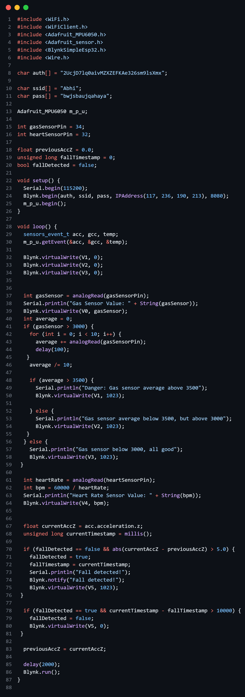

IOT System
For Elderly Care
An IoT system for elderly care supported by advanced sensors is essential for enhancing health outcomes ensuring safety, promoting independence, and providing valuable support to caregivers. It represents a holistic approach to elderly care that leverages technology to improve the overall quality of life for seniors and their families.
Embarking on a transformative journey in elderly care, our innovative IoT project combines a set of advanced sensors - think of them as health detectives - with a smart ESP32 brain. These sensors, like the MPU6050 for movements, MQ135 for air, and a heart rate sensor, work together under the watchful eye of the ESP32.
Imagine it as a real-time health wizard. It constantly keeps an eye on the elderly, sending updates to a remote control center. Now, if anything seems off, it's not just brushed aside. Instead, timely alerts are sent to caregivers. Whether it's a little stumble, a change in air quality, or a flutter in the heart rate, this system has got it covered.
What makes it stand out is its simplicity. No complex jargon, just a seamless blend of technology and care. This isn't just about gadgets; it's about redefining how we look after our elders. With this system, we're not just monitoring health; we're fostering a new level of caregiving that's proactive, responsive, and, most importantly, caring. Welcome to the future of elderly care - where technology meets compassion.
Components Used
For Creating The IoT System
NodeMCU ESP32
The NodeMCU ESP32 is an ideal platform for developing IoT solutions tailored to elderly care. Its compact form factor, integrated Wi-Fi and Bluetooth connectivity, and GPIO pins make it suitable for a range of applications aimed at monitoring and enhancing the well-being of the elderly.


MPU6050
The MPU6050 is a popular motion-tracking device containing a gyroscope and an accelerometer. When combined with a microcontroller like the NodeMCU ESP32, it becomes a valuable component for developing IoT systems for elderly care.
MQ135
The MQ135 gas sensor, when integrated with a microcontroller like the NodeMCU ESP32, becomes a valuable tool for developing IoT systems related to elderly care, particularly in monitoring air quality and ensuring a safe living environment.


Heart Beat Pulse Sensor
A heart rate pulse sensor with NodeMCU32S is a vital component in an IoT system designed for elderly care. This sensor continuously monitors the elderly person's heart rate, providing real-time data on their cardiovascular health. The NodeMCU32S, equipped with Wi-Fi capabilities, enables remote monitoring, allowing caregivers or family members to track the individual's health from a distance.
How does
it work?
Data Acquisition and Sensor Monitoring

The system collects real-time data from multiple sensors, including the MPU6050 for motion detection, the MQ135 for air quality monitoring, and a heart rate pulse sensor for health tracking. These sensors are connected to the ESP32 microcontroller, which acts as the central processing unit.
Data Processing and Communication

The ESP32 processes the raw sensor data, applying algorithms to interpret the information. It analyzes data from the MPU6050 to detect falls or irregular movements, interpret air quality measurements from the MQ135, and monitor the heart rate from the pulse sensor.
Monitoring and
Alerts

A user interface collects data from sensors like MPU6050 for motion, MQ135 for air quality, and a heart rate sensor linked to the ESP32 microcontroller. It offers comprehensive visualization and issues timely alerts to caregivers, ensuring swift responses to potential health issues.
Code
The provided Arduino sketch is a program designed for an ESP32 microcontroller with various sensors to monitor environmental conditions and detect potential incidents, such as gas leaks and falls.
Libraries and Dependencies:
The code includes several libraries necessary for the project, such as WiFi for internet connectivity, Blynk for IoT integration, and libraries for interfacing with sensors like the MPU6050 accelerometer.
Initialization:
The Blynk authentication token, WiFi credentials, and the MPU6050 sensor object are initialized.
Serial communication is set up for debugging purposes.
Blynk Setup:
The program establishes a connection to the Blynk server using the provided authentication token and WiFi credentials. This enables remote monitoring and control of the device through the Blynk mobile app.
Sensor Readings:
Accelerometer data from the MPU6050 sensor is read, and the z-axis acceleration value is sent to Blynk for monitoring.
Analog values from a gas sensor and a heart rate sensor are read and transmitted to Blynk.
Gas Sensor Handling:
Gas sensor readings are analyzed to determine the environmental conditions.
If the average gas sensor value is above a certain threshold (3500), it indicates a dangerous situation, and a corresponding message is sent to Blynk.
If the average value is between 3000 and 3500, a different message is sent to Blynk.
If the average value is below 3000, it signifies a safe condition.
Heart Rate Sensor Handling:
The code calculates the heart rate in beats per minute based on the analog reading from the heart rate sensor and sends it to Blynk.
Fall Detection:
The program includes fall detection logic using the MPU6050 accelerometer.
If a fall is detected (a sudden change in z-axis acceleration), a notification is sent to Blynk, and a visual indicator is set.
After a specified time without detecting a fall (10 seconds), the visual indicator is turned off.
Delay and Blynk Run:
The loop includes a delay of 2000 milliseconds (2 seconds) to control the frequency of sensor readings.
The Blynk.run() function is called to handle Blynk-related tasks.